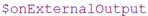
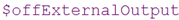
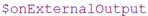
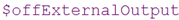

Tip:
You can use our Configuration Generator to customize your input widgets.
This section deals with the configuration of the GAMS WebUI. With the help of a suitable, customized configuration the WebUI can be adjusted to the individual needs of the user. The GAMS Web Interface is configured using JSON files. For a GAMS model used in the WebUI, these files are located in <modeldirectory>/conf. Two JSON files are used:
 /
/  and  /  tags. This file should not be modified manually.
and  /  tags. This file should not be modified manually.

The WebUI offers comprehensive visualization possibilities. Some basic visualization forms are already pre-implemented and only need to be configured by the user, i.e. adapted to her model-specific data. The selection of these pre-implemented graphics currently includes charts (line charts, histograms, pie charts, pivot tables) and is constantly being expanded.
In case the user would like to use his own, non pre-implemented and more sophisticated graphics, a corresponding API is available. More information can be found here.
Before the Web interface is started, both JSON files are validated in the background against a stored schema. If a schema is violated by one of these files, an error message is displayed in the default browser.
The GAMS WebUI comes with several options on how users can enter input data for their model runs. The default option is an editable table:

The corresponding GAMS parameter looks like this:  . By default, every cell in the table is editable and rows can be inserted and removed. If you only want to allow your users to edit certain tables or even only certain columns within a table, you will need to customize your GAMS parameter. You do so by adding this kind of information to the config.json file. For example, if we decide that the table for our parameter price should not be editable, this information needs to be added to your JSON file as follows:
. By default, every cell in the table is editable and rows can be inserted and removed. If you only want to allow your users to edit certain tables or even only certain columns within a table, you will need to customize your GAMS parameter. You do so by adding this kind of information to the config.json file. For example, if we decide that the table for our parameter price should not be editable, this information needs to be added to your JSON file as follows:
{
"inputWidgets": {
"price": {
"widgetType": "table",
"readonly": true
}
}
}You can use our Configuration Generator to customize your input widgets.
Scalars and singleton sets (in the following both referred to as "scalar values" or simply "scalars") are special in the sense that they will not be displayed in one separate table for each scalar value. Instead, they are combined into a single table called "Scalars". This saves space and also makes adding new scalars easy as all you have to do is add a new row to the "Scalars" table. Thus, it improves compactness and flexibility - especially when the GAMS WebUI is connected to a database.
Instead of displaying scalars in tabular form, you can use sliders, dropdown menus, checkboxes and more to populate your models.

In case you don't want each widget to be displayed on a separate sheet, we added an option to collect all scalar widgets on one sheet. This option can be found in the config.json file and is therefore available in our Configuration Generator.
One special feature of the GAMS WebUI is that you can define interdependencies between different parameters. Scalars can take two forms of dependencies to other parameters: They can feed their attributes from them and they can manipulate the content of those parameters. An example for this is the kport model that comes with your GAMS WebUI installation (in case you selected to install the example models). Here, we have a set of scenarios that can be selected as well as a singleton set with the currently selected/active scenario. A singleton set is suited to be represented as a dropdown menu, hence we choose that type of widget here. We would like to filter our parameters based on the currently selected scenario so that we only see data that is relevant for this scenario (this type of dependency is also referred to as a backward dependency). This means that in case scenario 1 is selected via our dropdown menu, we only want to display data relevant to scenario 1 to the user. Additionally, we want the choices of our dropdown menu to be the elements of all available scenarios (also referred to as a forward dependency).

Similar dependencies can also be considered for sliders. An example is the pickstock model. Here, the number of stocks you can select for your portfolio can not be larger than the number of stocks in your dataset. Similarly, the number of days you can use to train your model must not be larger than the number of days you have in the stock price dataset. The slider attributes - namely the maximum value that can be selected - should change according to the price data the user uploads. Thus, we also have forward dependencies here.
Of course you can configure those dependencies just like you configure everything else via our Configuration Generator. A table that shows the currently supported forms of dependencies for the different input widgets is shown below.
| Input widget type | Forward dependency | Backward dependency | Example model |
|---|---|---|---|
| Dropdown menu | kport | ||
| Slider | pickstock | ||
| Checkbox | - | ||
| Date selector | - | ||
| Daterange selector | () | pickstock_live |
You need dependency support for a type of widget which is currently not available? Please feel free to contact us at: support@gams.com. You added dependency support for another type of widget yourself? Send us a pull request on GitHub!
Aside from creating widgets for your GAMS Symbols, you can also generate widgets for GAMS command line parameters (double dash parameters as well as GAMS options). Again: All you have to do is add information on how these command line parameters should be displayed inside the WebUI to your config.json file. In order for the GAMS WebUI to recognize whether your symbol is a double dash parameter or a GAMS option, you must prefix the symbol name with either GMSPAR_ for double dash parameters or GMSOPT_ for GAMS options.
Let's assume you want the WebUI to call your GAMS model with the double dash parameter --numberPeriods set to a value between 1 and 14 (since your model allows up to 14 time periods and the minimum number of periods allowed should be 1). You also want the user to be able to select the MIP solver to use. As you have licenses for CPLEX, Gurobi and XPRESS, you can only use either of these three solvers. Thus, your config.json file should look as follows:
{
"inputWidgets": {
"GMSPAR_numberPeriods": {
"widgetType": "slider",
"alias": "Number of time periods",
"label": "Select the number of time periods to solve",
"min": 1,
"max": 14,
"default": 1,
"step": 1
},
"GMSOPT_mip": {
"widgetType": "dropdown",
"alias": "MIP Solver",
"label": "Solver to use for MIP models",
"choices": [
"CPLEX",
"GUROBI",
"XPRESS"
],
"multiple": false,
"selected": "CPLEX"
}
}
}You can generate the configuration for GAMS command line parameters the same way as the scalar widgets via our Configuration Generator.
The following GAMS options are reserved by the GAMS WebUI and can not be used: idir1,idir2,curdir,trace,traceopt,--WEBUI
We covered the basics of how to use widgets for your scalar inputs as well as command line parameters. Now, we will go into the technical details of how the communication between the GAMS WebUI and the GAMS compiler works:
Whenever a scalar value is set in the GAMS WebUI and GAMS is called, the scalar is read and an environment variable is set. The name of this environment variable is simply the name of the variable prefixed with the filename of your model followed by an underscore. So if your modelfile is called hello.gms and you defined a scalar input called myScalar that is read from the GAMS WebUI, the environment variable that is created when executing your model from the WebUI is called HELLO_MYSCALAR. Inside your GAMS model, this environment variable can be be accessed at compile time via: %sysenv.HELLO_MYSCALAR%. Note that we follow the convention that environment variables are capitalized.
Knowing that, internally, scalars are imported from the WebUI by setting environment variables comes in handy in certain situations e.g. if you want to access them inside an embedded code section. Thus, you might want to keep this detail in the back of your mind.
One more important aspect you should be aware of is how widgets that return two scalars instead of one are treated. Those widgets are currently a slider with two handles (also referred to as a slider range) and a date range selector. The lower value (or starting date of the date range) is postfixed with _lo and the upper value (or end date of the date range) is postfixed with _up. This means that if you specified a slider range for your double dash parameter --RANGE, you can access the lower value of the range with %RANGE_LO% and the upper value with %RANGE_UP% while %RANGE% will not be set.
In order for you to be able to customize your WebUI to its full potential, we have developed this Configuration Generator. Here you can customize your WebUI and graphics. At the end you can download the JSON-file that needs to be placed in the folder <modeldirecory>/conf.
The GAMS WebUI allows you to use your own custom renderers for your datasets. Currently we only support the visualization of data, not the generation. We may add this feature at a later stage depending on the demand.
In order to visualize a dataset, you will need to write two functions: a placeholder where your graphs etc. will later be rendered as well as the rendering function itself. To learn more about the concepts of this dual component approach, visit the website for the R Shiny framework that the GAMS WebUI is based upon: https://shiny.rstudio.com/. In particular, we are using Shiny Modules to realize the interface between the GAMS WebUI and your custom renderer functions. The template for the two components of every custom renderer is as follows:
<rendererName>Output <- function(id, height = NULL, options = NULL, path = NULL){
ns <- NS(id)
}
render<rendererName> <- function(input, output, session, data, options = NULL, path = NULL){
}
Note that you need to replace <rendererName> with your preferred name. Let's go through this code step by step. As mentioned, for each custom renderer we need to specify two functions: one that generates the the placeholder and one that fills this placeholder with data. The name of the placeholder function must be postfixed with "Output" and the name of the function that specifies the actual rendering must be prefixed with the keyword "render". Let's take the famous transport example from George Dantzig: We own a bunch of factories and wish to find a least cost shipping schedule that meets the demand at markets we are shipping to. Furthermore, the capacity constraints of our factories must not be violated. We decide to visualize the optimal shipping schedule on a map. As there is currently no out-of-the-box rendering function for visualizing data on a map for the GAMS WebUI, we need to write our own custom renderer which we name: transportMap. Thus, our initial template looks like this:
transportMapOutput <- function(id, height = NULL, options = NULL, path = NULL){
ns <- NS(id)
}
renderTransportMap <- function(input, output, session, data, options = NULL, path = NULL){
}R is case sensitive and the first letter after the render keyword needs to be uppercase! Thus, if the name of your renderer starts with a lowercase letter, you need to convert it to uppercase in the render* function.
Let's get back to our example. As we would like to visualize our optimized schedule on an interactive map, we choose the popular Leaflet library. Fortunately, there is already an R/Shiny interface for this library: Leaflet for R. This R package comes with the two functions: leafletOutput() that generates the placeholder and renderLeaflet() that renders a Leaflet map object created by the leaflet() function which takes our dataframe as its first argument. So let's put the pieces together and extend our code:
transportMapOutput <- function(id, height = NULL, options = NULL, path = NULL){
ns <- NS(id)
leafletOutput(ns("map"), height = height)
}
renderTransportMap <- function(input, output, session, data, options = NULL, path = NULL){
output$map <- renderLeaflet(leaflet(data))
}The data that you want to visualize is supplied via the data argument - an R dataframe. The function argument path is a string (a one-dimensional character vector) that specifies the absolute path to your customRenderer directory. This is useful if you want to include external files in your custom renderer functions. Optional parameters that you want to pass to the renderer can be accessed via the argument options - a (nested) list.
Now that we are familiar with the template that every custom renderer builds upon, we are still missing one fundamental concept so that we can use our custom renderer: binding the renderer to dataset(s) we wish to visualize.
This binding of GAMS parameter to renderer function is specified - just like any other renderer binding - in the config.json file; more precisely the dataRendering section. Let's assume that in our transportation example the GAMS parameter that specifies the optimal schedule is defined as optSched(lngP, latP, lngM, latM, plant, market) where (lngP,latP) and (lngM, latM) are the coordinates of the plants and markets respectively. Our config.json file should then look like this:
{
"dataRendering":{
"optSched":{
"outType":"transportMap",
"height":"700",
"options":{
"title":"Optimal transportation schedule"
}
}
}
}As you can see we bound the GAMS parameter optSched to our new custom renderer transportMap. Furthermore, we specified a parameter: title that can be accessed by our custom renderer via the options list.
If we decided to run our WebUI now, we still would not be able to see anything other than a blank area. Thus, we will need to fill our renderer with some life:
transportMapOutput <- function(id, height = NULL, options = NULL, path = NULL){
ns <- NS(id)
tagList(
textOutput(ns("title")),
leafletOutput(ns("map"))
)
}
renderTransportMap <- function(input, output, session, data, options = NULL, path = NULL){
output$title <- renderText(options$title)
output$map <- renderLeaflet(leaflet(data) %>%
addTiles() %>%
addMarkers(~lngP, ~latP, label = ~plant)
)
}Within our rendering function, we set the title, add the default OpenStreetMap tiles as well as some markers for our plants.
The syntax ~lngP that you see here is simply a shorthand for data$lngP - the pipe operator a(x) %>% b(y) a shorthand for tmp <- a(x); b(tmp, y)

The GAMS WebUI comes with the ability to change the preferred language from within the configuration file. Setting your preferred language in the configuration results in the WebUI embedding the corresponding language file where all the language specific components are specified via JSON syntax. The WebUI currently ships with two of those language files: English and German. If you would like to add another language to this list, you are more than welcome to translate one of the existing language files. The language files are located at: <GAMSRoot>/GMSWebUI/conf/en.json and are validated against the JSON Schema file: <GAMSRoot>/GMSWebUI/conf/language_schema.json. Note that there are sometimes placeholders in the language files. Let's take the error message: "The value '%s' for the slider: '%s' is not of numeric type." for example. %s will then be replaced with the value and name of the slider by the WebUI.
If you would like to contribute your language file, so that other people can profit from your work as well, send us an email: support@gams.com.